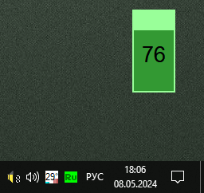

PureBasic
VolCon
Назначение
Регулировка звука колесом мыши удерживая Shift (Vista и выше).

Взаимосвязанные
VolCon (AutoIt3, WinXP)Описание
Volume Control - регулировка громкости. При нажатой клавише Shift можно регулировать уровень громкости, при этом будет показан индикатор, а в момент изменения и в трее будет изменяться значок. Также на индикаторе можно кликать мышкой, чтобы задать уровень. Двойной клик на иконке в трее - отключение/включение звука. Правый клик на индикаторе и иконке в трее - меню для выхода. Задержка показа индикатора 1.5 секунды, но если мышь над индикатором он остаётся активным и не пропадает.